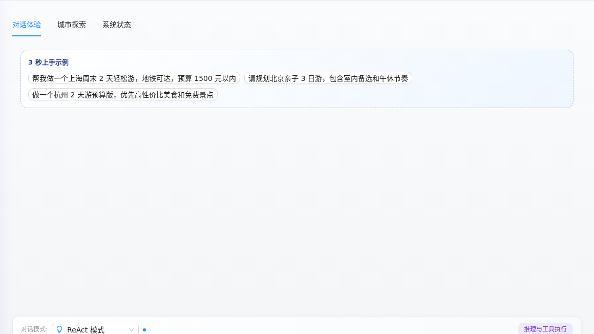
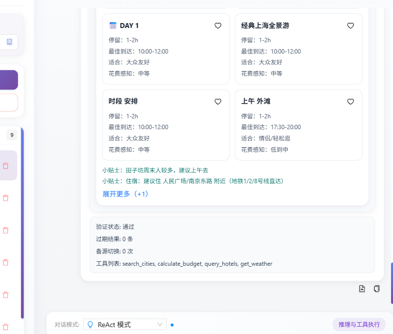
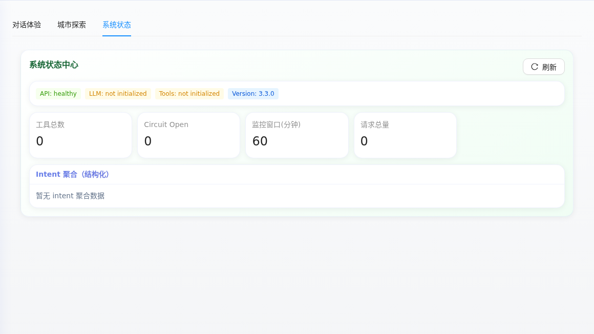

旅行决策不是一段长文本能解决的
用户需要在目的地、预算、同行人、步行强度、天气、餐饮、路线顺序和景点开放时间之间反复权衡。RoutePilot 的目标，是把这些约束转成可比较、可调整、可验证的行程结果，让用户从模糊需求走到真正能出发的路线。
用户需要在目的地、预算、同行人、步行强度、天气、餐饮、路线顺序和景点开放时间之间反复权衡。RoutePilot 的目标，是把这些约束转成可比较、可调整、可验证的行程结果，让用户从模糊需求走到真正能出发的路线。
项目覆盖 Next.js / React / TypeScript 前端、FastAPI 与 Agent Runtime、LangChain / LangGraph、多会话与 SSE 流式执行、PostgreSQL / Prisma 旅行数据 Demo、北京 POI/UGC/通勤边/路线库，以及测试、文档和运维治理入口。




支持 direct、react、plan 三种对话模式，SSE 输出阶段、工具调用、推理片段、最终答案和执行元数据。
内置真实策展城市池，支持预算、亲子、雨天、少走路、美食等快速筛选和候选城市对比。
围绕本地 POI、酒店、餐饮、文化地点、UGC 评论特征、Wiki 数据和高德通勤边做路线规划。
PostgreSQL 保存 travel_precomputed_routes，运行时优先命中路线库，再用本地 POI/UGC 数据兜底检索。
支持追加、删除、替换、保留地点等局部调整，结合路线补丁解释变更原因。
识别时间冲突、路程过长、闭馆风险、预算压力和时效风险，并提供继续修复的操作入口。
行程结果沉淀成结构化 artifact，支持图片长图、分享短链、执行清单和同行人决策。
保留 runtime doctor、support bundle、release harness、skills market、snapshot 和 benchmark 文档。
用户输入被解析成区域、时长、预算、餐饮、脚力和偏好约束，大模型不直接拼 SQL。
后端把 intent 转成受控查询，优先命中预生成路线库，并从 POI、UGC、Wiki 和通勤边补充证据。
Agent Runtime 串联 graph、skills、memory、checkpoint 和 runtime event emitters，向前端输出流式过程。
路线、预算、冲突、可信度、风险和工具调用被整理成结构化 artifact，进入结果工具箱和分享链路。
http://localhost:33003/ 前端工作台可访问。继续优化路线编辑、地点替换、餐饮插入、局部重排和地图可视化。
扩展 POI、UGC、Wiki、通勤边和开放时间数据，提升推荐解释和排序稳定性。
强化长图导出、短链分享、方案对比和同行人投票，让旅行决策更容易达成共识。
继续沉淀回归样例、黄金流、性能检查、运行收据和故障诊断，降低 Agent 质量漂移。